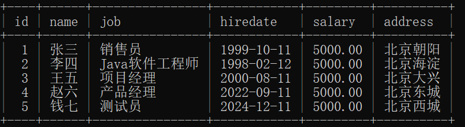
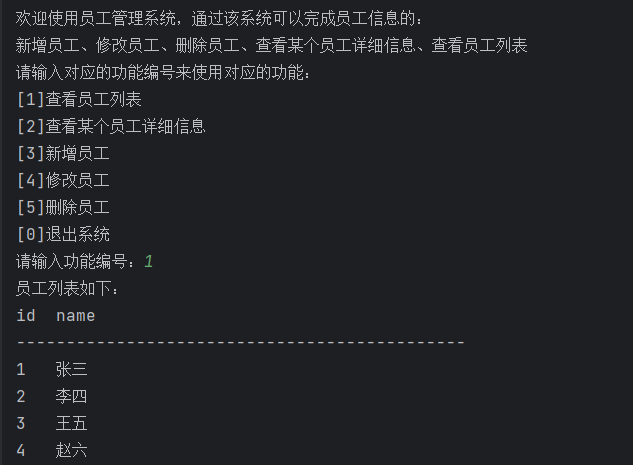
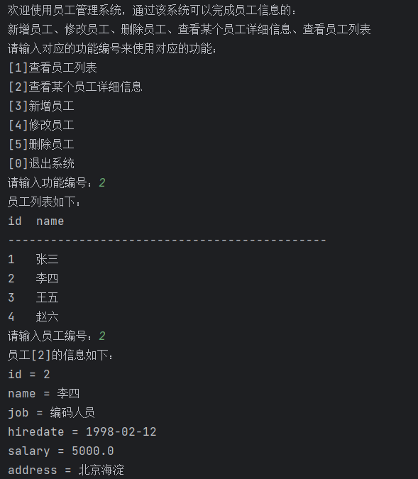
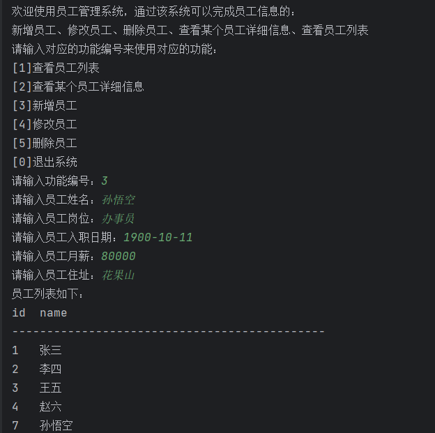
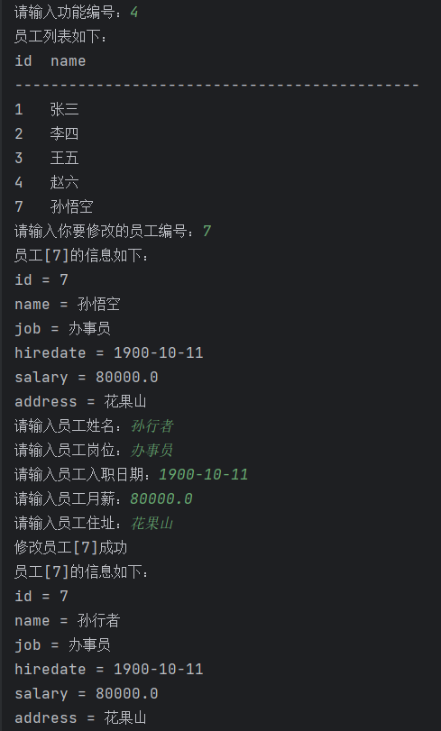
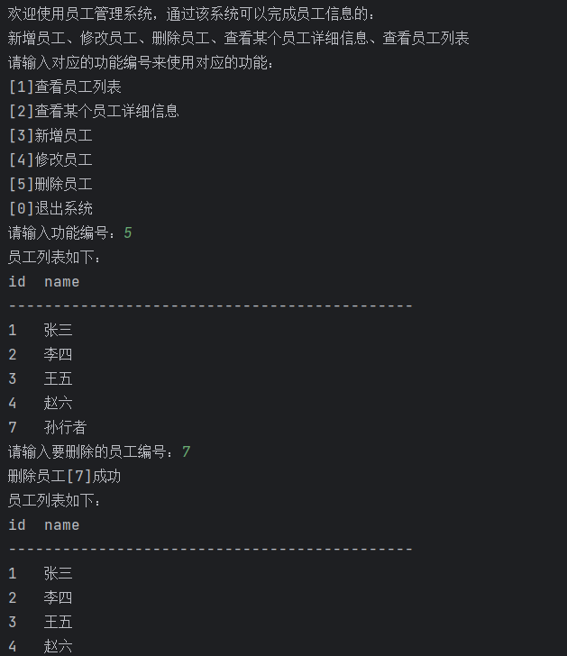
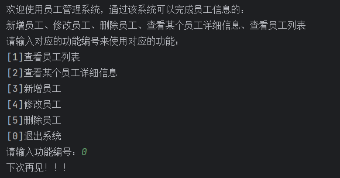

下边会用一个员工信息管理系统演示DAO 本文使用工具类：utils
UserDao，操作员工数据的叫做EmployeeDao，操作产品数据的叫做ProductDao，操作订单数据的叫做OrderDao等。drop databases if exists jdbc;
drop table if exists t_employee;
create table t_employee(
id bigint primary key auto_increment,
name varchar(255),
job varchar(255),
hiredate char(10),
salary decimal(10,2),
address varchar(255)
);
insert into t_employee(name,job,hiredate,salary,address) values('Zhang San','Salesman','1999-10-11',5000.0,'Chaoyang, Beijing');
insert into t_employee(name,job,hiredate,salary,address) values('Li Si','Coder','1998-02-12',5000.0,'Haidian, Beijing');
insert into t_employee(name,job,hiredate,salary,address) values('Wang Wu','Project Manager','2000-08-11',5000.0,'Daxing, Beijing');
insert into t_employee(name,job,hiredate,salary,address) values('Zhao Liu','Product Manager','2022-09-11',5000.0,'Dongcheng, Beijing');
insert into t_employee(name,job,hiredate,salary,address) values('Qian Qi','Tester','2024-12-11',5000.0,'Xicheng, Beijing');
commit;
select * from t_employee;

maven坐标
<dependencies>
<dependency>
<groupId>junit</groupId>
<artifactId>junit</artifactId>
<version>3.8.1</version>
<scope>test</scope>
</dependency>
<dependency>
<groupId>mysql</groupId>
<artifactId>mysql-connector-java</artifactId>
<version>8.0.33</version>
</dependency>
<dependency>
<groupId>org.projectlombok</groupId>
<artifactId>lombok</artifactId>
<optional>true</optional>
</dependency>
</dependencies>
查看员工列表

查看员工详情

新增员工

修改员工

删除员工

退出系统

Employee类是一个Java Bean，专门用来封装员工的信息
package top.charles.entity;
import lombok.AllArgsConstructor;
import lombok.Data;
import lombok.NoArgsConstructor;
/**
* ClassName: Employee
* Description:
* Datetime: 2024/4/14 23:32
* Author: 老杜@动力节点
* Version: 1.0
*/
@Data
@NoArgsConstructor
@AllArgsConstructor
public class Employee {
private Long id;
private String name;
private String job;
private Double salary;
private String hiredate;
private String address;
}
这里封装一些基本的jdbc，其实dao就是mapper
package top.charles.dao;
import top.charles.utils.DbUtils;
import java.lang.reflect.Field;
import java.sql.*;
import java.util.ArrayList;
import java.util.List;
/**
* ClassName: BaseDao
* Description: 最基础的Dao，所有的Dao应该去继承该BaseDao
* Datetime: 2024/4/15 11:08
* Author: 老杜@动力节点
* Version: 1.0
*/public class BaseDao {
/**
* 这是一个通用的执行insert delete update语句的方法。
* @param sql
* @param params
* @return
*/
protected int executeUpdate(String sql, Object... params) {
Connection conn = null;
PreparedStatement ps = null;
int count = 0;
try {
// 获取连接
conn = DbUtils.getConnection();
// 获取预编译的数据库操作对象
ps = conn.prepareStatement(sql);
// 给 ? 占位符传值
if(params != null && params.length > 0){
// 有占位符 ?
for (int i = 0; i < params.length; i++) {
ps.setObject(i + 1, params[i]);
}
}
// 执行SQL语句
count = ps.executeUpdate();
} catch (SQLException e) {
throw new RuntimeException(e);
} finally {
DbUtils.close(conn, ps, null);
}
return count;
}
/**
* 这是一个通用的查询语句
* @param clazz
* @param sql
* @param params
* @return
* @param <T>
*/
protected <T> List<T> executeQuery(Class<T> clazz, String sql, Object... params){
List<T> list = new ArrayList<>();
Connection conn = null;
PreparedStatement ps = null;
ResultSet rs = null;
try {
// 获取连接
conn = DbUtils.getConnection();
// 获取预编译的数据库操作对象
ps = conn.prepareStatement(sql);
// 给?传值
if(params != null && params.length > 0){
for (int i = 0; i < params.length; i++) {
ps.setObject(i + 1, params[i]);
}
}
// 执行SQL语句
rs = ps.executeQuery();
// 获取查询结果集元数据
ResultSetMetaData rsmd = rs.getMetaData();
// 获取列数
int columnCount = rsmd.getColumnCount();
// 处理查询结果集
while(rs.next()){
// 封装bean对象
T obj = clazz.newInstance();
// 给bean对象属性赋值
/*
比如现在有一张表：t_user，然后表中有两个字段，一个是 user_id，一个是user_name
现在javabean是User类，该类中的属性名是：userId,username
执行这样的SQL语句：select user_id as userId, user_name as username from t_user;
*/
for (int i = 1; i <= columnCount; i++) {
// 获取查询结果集中的列的名字
// 这个列的名字是通过as关键字进行了起别名，这个列名就是bean的属性名。
String fieldName = rsmd.getColumnLabel(i);
// 获取属性Field对象
Field declaredField = clazz.getDeclaredField(fieldName);
// 打破封装
declaredField.setAccessible(true);
// 给属性赋值
declaredField.set(obj, rs.getObject(i));
}
// 将对象添加到List集合
list.add(obj);
}
} catch (Exception e) {
throw new RuntimeException(e);
} finally {
DbUtils.close(conn, ps, rs);
}
// 返回List集合
return list;
}
/**
*
* @param clazz
* @param sql
* @param params
* @return
* @param <T>
*/
protected <T> T queryOne(Class<T> clazz, String sql, Object... params){
List<T> list = executeQuery(clazz, sql, params);
if(list == null || list.size() == 0){
return null;
}
return list.get(0);
}
}
定义EmployeeDao：定义五个方法，分别完成五个功能，新增，修改，删除，查看一个，查看所有。
package top.charles.dao;
import top.charles.entity.Employee;
import java.sql.*;
import java.util.List;
/**
* ClassName: EmployeeDao
* Description: Employee数据访问层，继承BaseDao
* Datetime: 2024/4/14 23:34
* Author: 老杜@动力节点
* Version: 1.0
*/
public class EmployeeDao extends BaseDao {
/**
* 新增员工
* @param employee
* @return
*/
public int insert(Employee employee) {
String sql = "insert into t_employee(name,job,salary,hiredate,address) values(?,?,?,?,?)";
return executeUpdate(sql,
employee.getName(),
employee.getJob(),
employee.getSalary(),
employee.getHiredate(),
employee.getAddress()
);
}
/**
* 修改员工
* @param employee
* @return
*/
public int update(Employee employee){
String sql = "update t_employee set name=?, job=?, salary=?, hiredate=?, address=? where id=?";
return executeUpdate(sql,
employee.getName(),
employee.getJob(),
employee.getSalary(),
employee.getHiredate(),
employee.getAddress(),
employee.getId()
);
}
/**
* 根据id删除员工信息
* @param id 员工id
* @return 1表示成功
*/
public int deleteById(Long id){
String sql = "delete from t_employee where id = ?";
return executeUpdate(sql, id);
}
/**
* 根据id查询所有员工
* @param id
* @return
*/
public Employee selectById(Long id){
String sql = "select * from t_employee where id = ?";
return queryOne(Employee.class, sql, id);
}
/**
* 查询所有员工信息
* @return 员工列表
*/
public List<Employee> selectAll(){
String sql = "select * from t_employee";
return executeQuery(Employee.class, sql);
}
}
package top.charles;
import top.charles.dao.EmployeeDao;
import top.charles.entity.Employee;
import java.math.BigDecimal;
import java.util.Scanner;
public class App {
public static void main(String[] args){
System.out.println("Welcome to the Employee Management System. Through this system, you can perform the following employee information operations:\n"+
"Add Employee, Modify Employee, Delete Employee, View Specific Employee Details, View Employee List");
String welcome_text = "Please enter the corresponding function number to use the corresponding function:\n"+
"[1] View Employee List\n"+
"[2] View Specific Employee Details\n"+
"[3] Add Employee\n"+
"[4] Modify Employee\n"+
"[5] Delete Employee\n"+
"[0] Exit System\n";
Scanner scanner = new Scanner(System.in);
while(true){
System.out.println(welcome_text);
switch (scanner.nextInt()){
case 0:
break;
case 1:
System.out.println("View Employee List");
for (Employee employee : new EmployeeDao().selectAll()) {
System.out.println(employee);
}
break;
case 2:
System.out.println("View Specific Employee Details");
System.out.println("Please enter the employee ID:");
System.out.println(new EmployeeDao().selectById(scanner.nextLong()));
break;
case 3:
System.out.println("Add Employee");
System.out.println("Please enter the employee information:");
System.out.println("Name:");
String name = scanner.next();
System.out.println("Job:");
String job = scanner.next();
System.out.println("Salary:");
BigDecimal salary = scanner.nextBigDecimal();
System.out.println("Hire Date(ex. 2012-01-15):");
String hiredate = scanner.next();
System.out.println("Address:");
String address = scanner.next();
System.out.println(new EmployeeDao().insert(new Employee(null, name, job, salary, hiredate, address)));
break;
case 4:
System.out.println("Modify Employee");
System.out.println("Please enter the employee id:");
Long id = scanner.nextLong();
System.out.println("Origin information");
System.out.println(new EmployeeDao().selectById(id));
System.out.println("Please enter the employee information:");
System.out.println("Name:");
name = scanner.next();
System.out.println("Job:");
job = scanner.next();
System.out.println("Salary:");
salary = scanner.nextBigDecimal();
System.out.println("Hire Date(ex. 2012-01-15):");
hiredate = scanner.next();
System.out.println("Address:");
address = scanner.next();
System.out.println(new EmployeeDao().update(new Employee(id, name, job, salary, hiredate, address)));
break;
case 5:
System.out.println("Delete Employee");
System.out.println("Please enter the employee id:");
System.out.println(new EmployeeDao().deleteById(scanner.nextLong()));
break;
default:
System.out.println("Invalid operation, please try again.");
break;
}
}
}
}